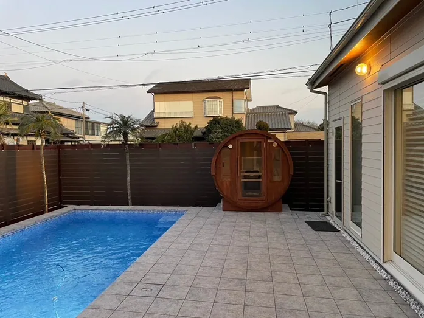
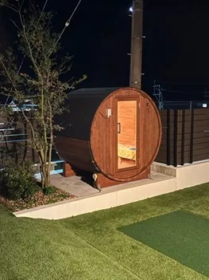

「自宅で本格的な家庭用サウナを楽しみたい」「屋外に設置できる2人用サウナを探している」「どのバレルサウナが最適なのか知りたい」など、このような悩みはありませんか？
こちらでは、家庭用バレルサウナの特徴とメリット、サイズや価格などの選び方、おすすめのモデルを詳しく解説します。さらに、設置時の注意点や、快適に活用するためのポイントも紹介します。
個人宅の導入実績が豊富なRink SAUNAが提供する情報です。最後まで読めば、自宅にぴったりの2人用屋外サウナがイメージでき、快適なリラクゼーション空間を実現できます。
家庭用サウナで深まる絆！屋外設置で2人の特別な時間
「パートナーや親しい友人と、もっと楽しい時間を過ごしたい」そのような願いを家庭用サウナが叶えてくれます。屋外に設置された2人用のバレルサウナは、大切な人との絆を深める空間になるでしょう。
現代社会では、日々の忙しさの中で、ゆっくりと語り合う時間が少なくなってしまいがちです。しかし、自宅の庭にバレルサウナがあれば、移動の手間も、周りの目を気にする必要もありません。好きな時に、心ゆくまでリラックスできるプライベートな空間が手に入ります。
非日常感を味わう
温かいサウナの中で、深い会話を楽しめます。星空を眺めながらの外気浴は、日常を忘れさせ、感動的な体験となるでしょう。
共通の趣味を育む
サウナは共通の趣味として、新しい話題や楽しみを提供してくれます。
心身のリフレッシュを共有する
お互いの疲れを癒やし、リフレッシュする時間を共有することで、より一層強い絆が生まれます。
家庭用サウナの屋外設置は、2人にとって忘れられない思い出を作ることにも繋がります。
2人用の屋外家庭用サウナの選び方

家庭用サウナの導入を検討する際、まず考える必要があるのは設置場所です。屋外設置の場合は、庭の広さ・周囲の環境・法律上の制限などを確認しましょう。2人用サウナはコンパクトなモデルが多く、限られたスペースにも設置しやすいのがメリットです。
バレルサウナの特徴とメリット
バレルサウナとは、その名の通り樽型のサウナのことです。以下にバレルサウナの特徴とメリットをまとめました。
| 特徴 | メリット |
|---|---|
| 樽型 | 可愛らしい見た目 熱効率がよく、あたたまるのが早い |
| サイズ | 2名〜最大8名までさまざまなサイズ展開 |
| 素材 | 国産ヒノキ、レッドシダーなど |
円筒形のフォルムが特徴的で、その可愛らしい見た目から特に屋外サウナとして人気を集めています。コンパクトな2人用モデルから大人数で楽しめる大型モデルまで、さまざまなサイズが展開されているため、ご自身のニーズに合ったサウナを選びやすい点もメリットです。
素材には高温多湿に優れた木材が用いられることが多く、なかでも国産ひのきは、その美しい木目と芳醇な香りそして高い耐湿・耐久性の特徴からサウナ愛好家に人気です。ひのきの香りはリラックスを促すとされる成分が含まれているといわれており、よりお家で快適なサウナ体験をもたらしてくれます。
2人用サイズのバレルサウナは、限られたスペースにも設置できるコンパクトさが魅力です。設置スペースに余裕が少ないご家庭でも、気軽に屋外サウナを楽しめます。
おすすめは、Rink SAUNAが提供している、国産ひのきバレルサウナi-barrel Small R15です。2～4名でゆったりとくつろげるサイズ感で、高品質な国産ひのき材を使用しています。美しい木目と心地よい香りに包まれながら、特別なサウナ体験を味わえます。
バレルサウナは、その独特の形状と設置のしやすさから、近年注目を集めています。ご自宅のお庭で、気軽に本格的なフィンランドサウナを体験したいという方には、特におすすめします。
2人用サウナのサイズ、価格、設置スペース
2人用サウナの設置を検討する際、サイズ・価格・設置スペースは有用な要素です。快適なサウナ体験を得るためにも、事前にしっかりと確認しておきましょう。
| 要素 | 説明 |
|---|---|
| サイズ |
|
| 価格 |
|
| 設置スペース |
|
2人用サウナは、「ちょっと贅沢な日常」を叶えてくれる最適なサイズ。コンパクトなものから少しゆったりとしたものまで、設置スペースや利用シーンに合わせて最適なサイズを選びましょう。
設置スペースは、サウナ本体のサイズに加えて、周囲に20cm程度のスペースを確保することが推奨されます。これは、安全性を確保するためだけでなく、メンテナンスや換気をスムーズに行うためにも大切です。またサウナを設置する際には、地面が水平であること、サウナ室内熱源に安全距離を確保していることなども確認しましょう。電気ストーブを使う場合は単相200Vの引き込みが必要です。ガス式を選ぶ場合はガス工事も必要なため、設置前に配線・配管の確認をしておくことも忘れずに対応しましょう。
価格については、使用する木材の種類やサウナストーブの種類、その他オプションによって変動します。設置費用なども含めて、トータルで200万円台前後が一般的な導入コストになります。予算に合わせて最適なサウナを選びましょう。
2人用バレルサウナの魅力とおすすめモデル

2人用バレルサウナは、コンパクトながらも機能的で、特別な時間を共有したいカップルや友人同士に最適です。その魅力は、限られたスペースでも設置できるサイズ感と、プライベートな空間でリラックスできる点にあります。
バレルサウナの大きなメリットはその美しいフォルム。天然木の曲線が庭の景観に美しく調和し、特別な空間を演出します。さらに、密閉性の高さから温度上昇が早く、効率よくサウナを楽しめます。
おすすめモデルは、国産ひのき材を使用した「国産ひのきバレルサウナi-barrel Small R15」です。このモデルは、2人～最大4名までゆったりとくつろげるサウナ空間を確保しながら、無駄のない設計で設置スペースもコンパクトに抑えられています。自宅の庭やウッドデッキの上に設置することで、しっかりと安定させられます。高品質な国産ひのきの香りはリラックス効果を実感し、さらに耐久性にも優れています。
| 項目 | 内容 |
|---|---|
| サイズ | 直径：1,800mm／高さ：1,880mm／奥行：1,500mm 床面積：2.78平方メートル／室内体積： 約3.03平方メートル 体積：3.77立法メートル |
| 材質 | 壁厚40mmの国産ひのき 金属部：オールステンレス仕様（バンド、ビス、ボルト類） 強化ガラスドア（高耐久） |
| 定員 | 2名～4名 |
| 推奨熱源 | 電気ヒーターブロスSAT（4.5kW単相200V） 電気ヒーターHARVIA KIP6（5.5kW単相200V） ガスストーブLSH-6（7.0kW） |
「国産ひのきバレルサウナi-barrel Small R15」は、高品質な素材と丁寧な職人技で作られており、長く愛用できるサウナです。ご自宅で手軽に本格的なサウナ体験を楽しみたい方におすすめです。
2人用屋外サウナの活用法
2人用屋外サウナは、限られたスペースでも設置できるコンパクトさが魅力です。プライベートな空間で、誰にも邪魔されずにサウナを楽しめます。ここでは、2人用屋外サウナのさまざまな活用シーンをまとめました。
| 用途 | 説明 |
|---|---|
| 自分のリラックスタイム |
|
| 夫婦の時間 |
|
| 友人との語らい |
|
2人用屋外サウナの選び方としては、設置スペースや予算、メンテナンスなどを考慮することが大切です。おすすめは、国産ひのき材を使用した「国産ひのきバレルサウナi-barrel Small R15」です。コンパクトながらも快適なサウナ体験を提供してくれます。設置費用やメンテナンスの手間なども考慮しながら、ご自宅に合ったバレルサウナを選び、本格的なサウナライフを満喫しましょう。
屋外の家庭用サウナについてご検討の方はRink SAUNAまで
くつろぎを感じやすいリラクゼーション空間を自宅に取り入れてみませんか？国産ひのきを贅沢に使用した2人用の屋外家庭用バレルサウナなら、心地よい木の香りに包まれながら、穏やかなひとときを過ごせます。
Rink SAUNAでは特許申請中のサウナ構造である「Mitsuna構造」により、高気密性を実現。
構造の継ぎ手部分の特殊加工による高い熱効率により、他のバレルサウナでは得られないサウナ室が実現できます。
全国配送はもちろん、現地での設置まで対応し、安心して導入できるのも魅力。個人利用はもちろん、グランピング施設や宿泊施設への導入にも適しており、ビジネスシーンでも活用可能です。納期の確実な順守も徹底し、スムーズに設置できるようサポートします。
自宅での特別な時間をより充実させたい方、またはビジネスに付加価値を加えたい方は、ぜひお気軽にお問い合わせください。理想の2人用屋外バレルサウナで、心身ともにリフレッシュしましょう。